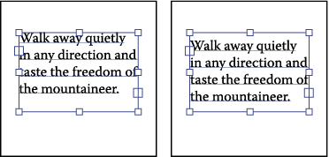

Raise or lower the first baseline in a text area
When working with an area type object, you can control the alignment of the first line of text with the top of the object. This alignment is referred to as the first baseline offset. For example, you can make text stick up above the top of the object or fall a specific distance below the top of the object.

Type with First Baseline set to Cap Height (left) compared
to type with First Baseline set to Leading (right)